Alvacordo

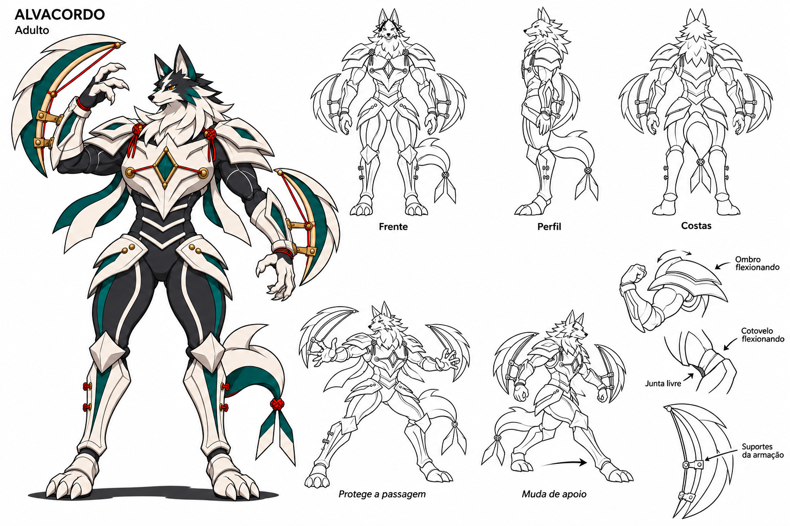
SOULMONSTERS · CADERNO DE CONCEPT
27 folhas para comparar anatomia, armadura e gestos. Cada uma combina pose colorida, vistas em lineart e estudos ligados ao comportamento da criatura.
25 folhas novas da coleção, junto das folhas existentes de Dobrácula e Alvacordo. As vistas são estudos para revisão de produção.

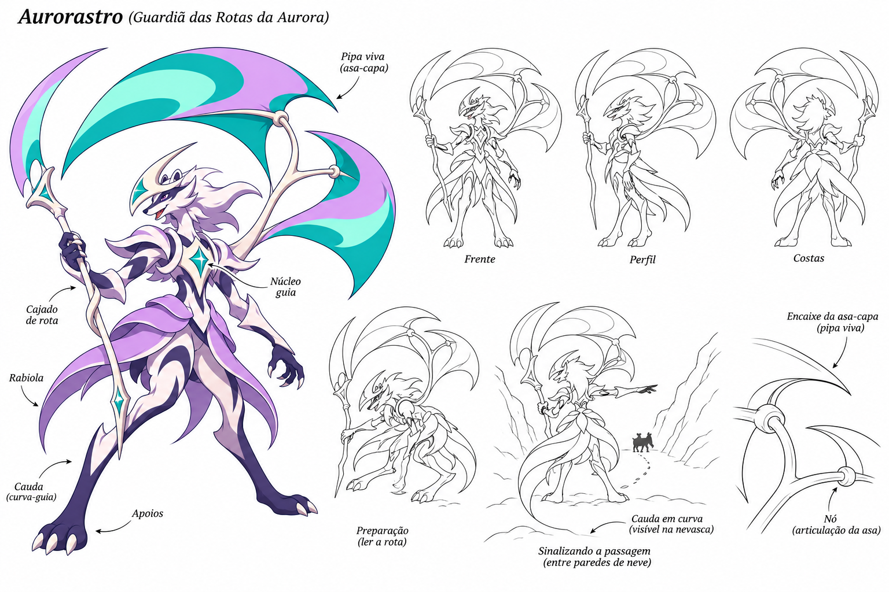

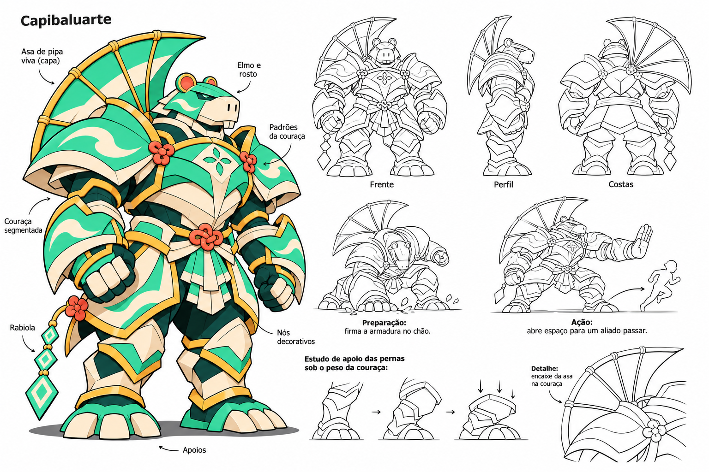

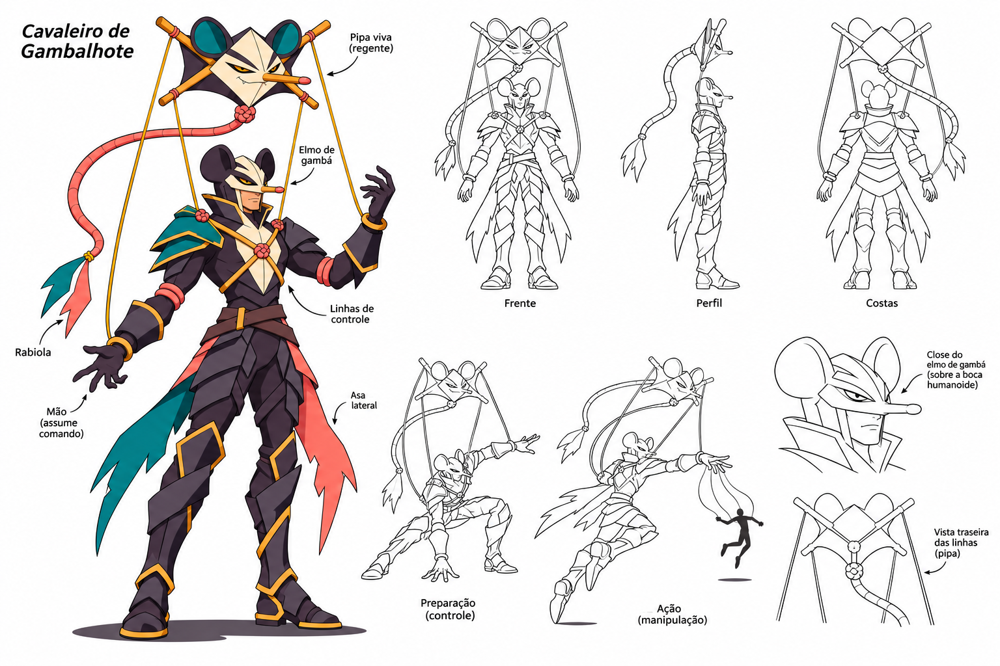


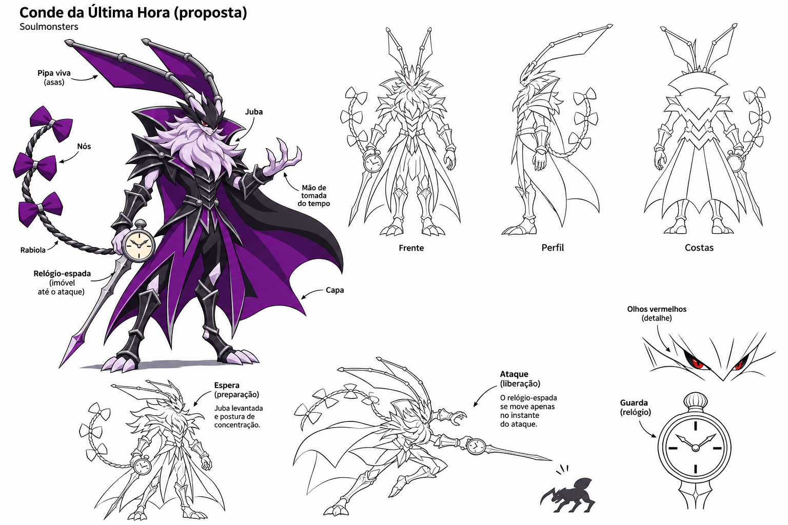

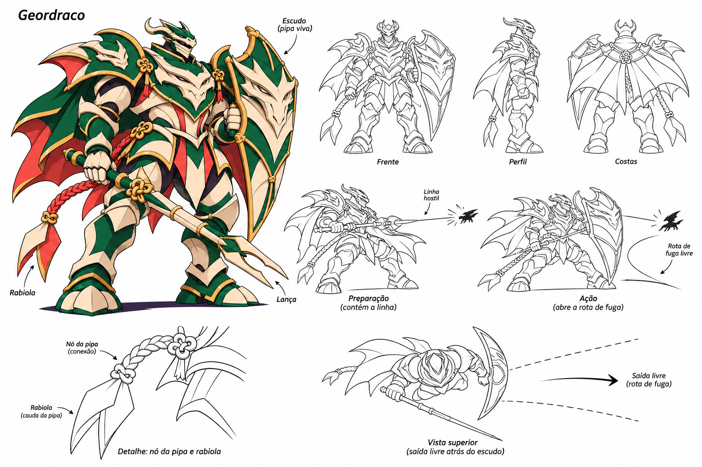
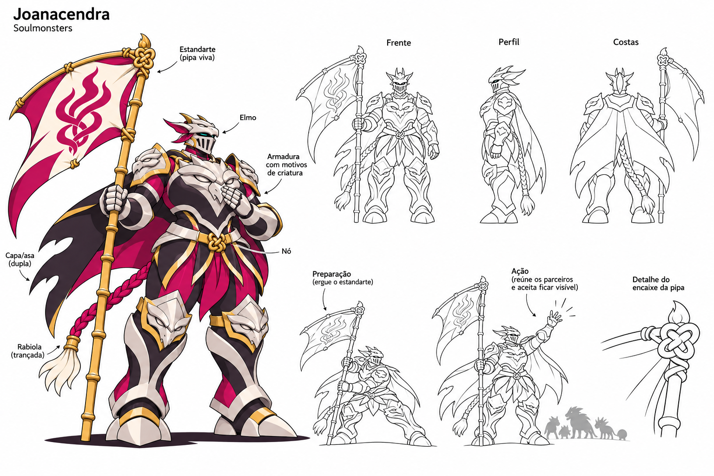
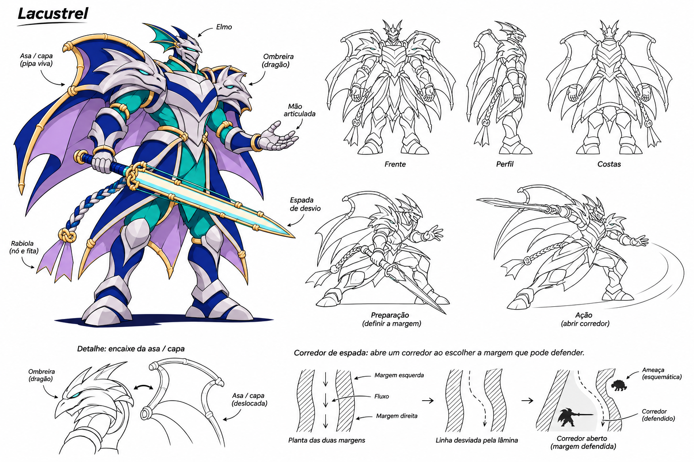


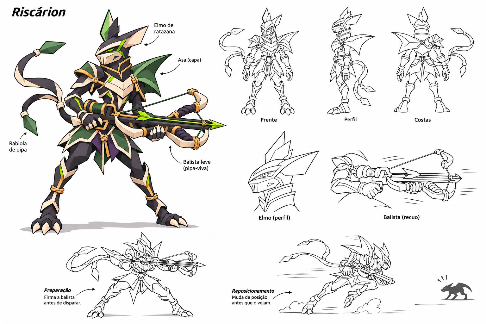

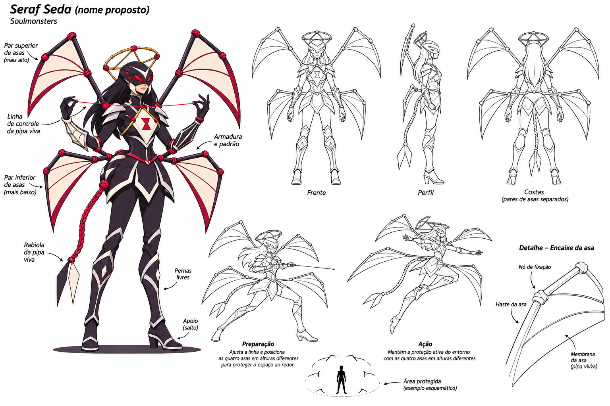


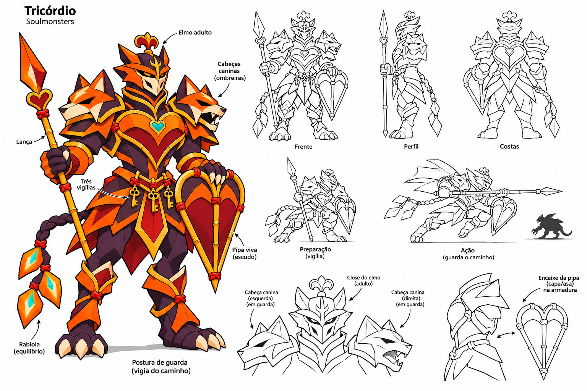


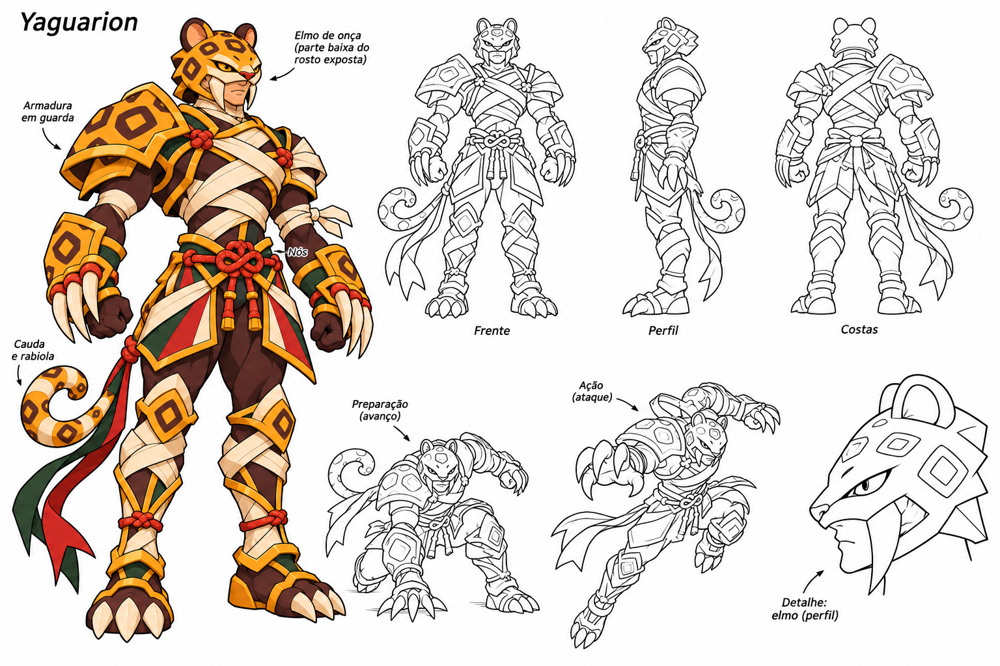